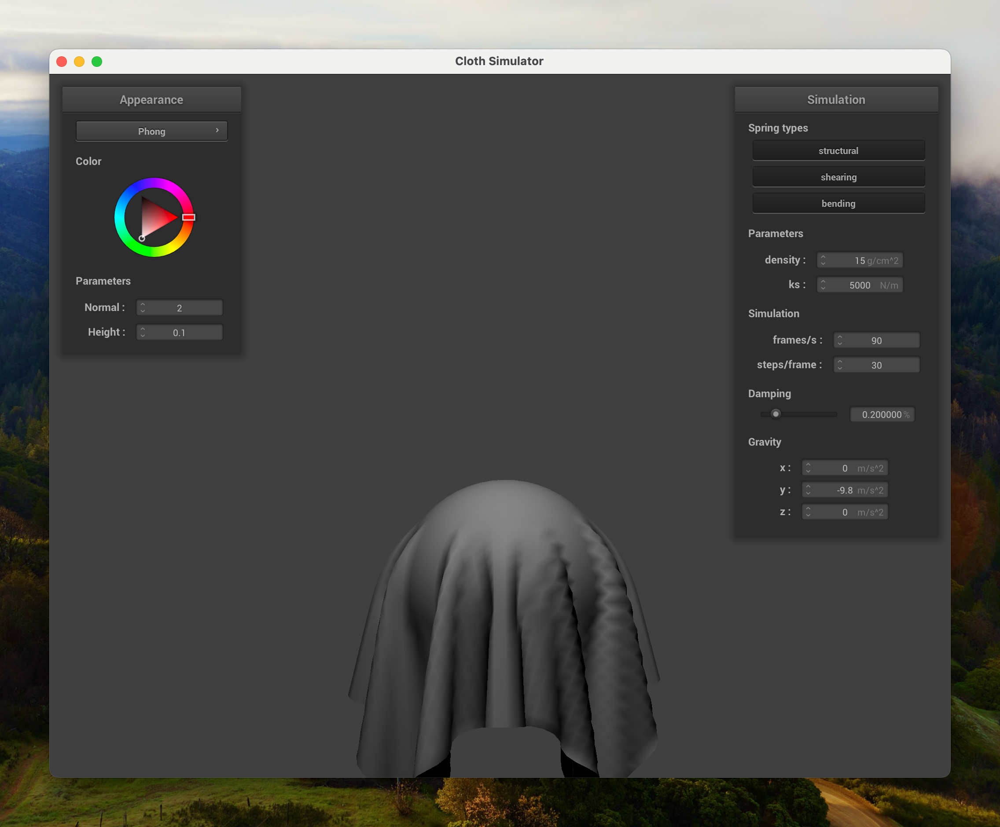
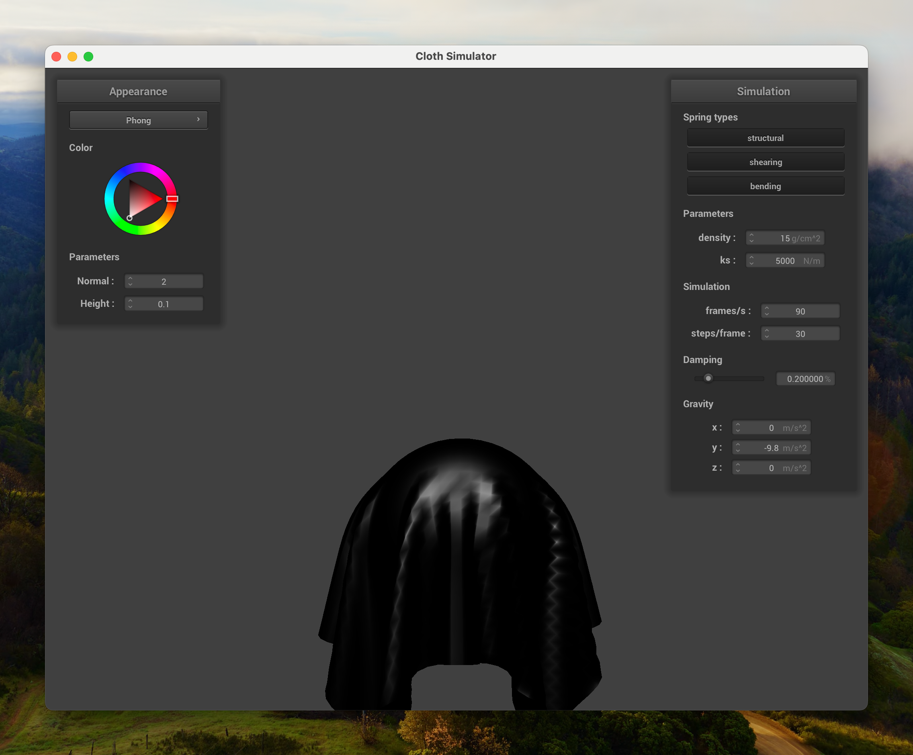

https://cal-cs184-student.github.io/hw-webpages-sp24-oliver-ni/hw4/index.html
In this project, we implemented a simple simulation for cloth material. There are many ways to simulate cloth, but we used the simplest method, which is modeling the cloth as a grid of masses connected by springs. The springs provide the forces that keep the cloth together and give it its shape.
First, we built the actual grid of masses and springs that represent the cloth. There are a few different types of springs in the simulation:
Here’s pictures the cloth grid, with each of these types of springs enabled:
| Structural | Shearing | Bending |
|---|---|---|
Notice that the structural and bending screenshots look the same in the screenshot, since the perfect grid makes it impossible to differentiate between lines between nearest neighbors and lines between second-nearest neighbors.
With them all enabled, the cloth looks like this:
Next, we implemented the physics simulation that actually moves the cloth. We first calculate the forces on each mass, based on both external accelerations on the whole cloth (in this case, gravity) as well as the forces from the springs connecting the masses. To do this, we use Hooke’s Law as well as F = ma to calculate the forces on each mass.
Once we have the forces, we can calculate the movement of the cloth. Because we only know what the accelerations of the masses should be, and the velocities aren’t constant, we need a way to approximate the integral. To do this, we used the Verlet integration method.
There are a couple parameters of the cloth in our simulation: the spring constant ks, tdamping constant d, as well as the density of the point masses in the cloth. Playing around with these, we notice the following:
The spring constant ks affects the “strechiness” of the cloth (along the plane). Although the way the cloth falls is pretty similar regardless of the value of ks, the resulting shape of the cloth is different. Low values of ks make the cloth “sag” down more, while high values of ks make the cloth more taut.
| ks = 5000 | ks = 50000 |
|---|---|
The density affects the “rigidity” the cloth (with respect to bends). Higher densities make the cloth more “solid” and less likely to bend or fold, whilea lower densities make the cloth more flexible. This is because the density affects the mass of each point mass in the cloth, and thus how much force is needed to move it.
| ρ = 1 | ρ = 20 |
|---|---|
The damping factor d affects the “bounciness” of the cloth. Low values of d make the cloth feel more bouncy, where even after falling, it will continue to bounce back and force, losing little energy. High values of d make the cloth come to rest more quickly after stabilizing (though it makes it fall slower).
| d = 0.05% | d = 0.2% |
|---|---|
Here is a picture of the cloth in final.json in its
final resting state:
We also implemented a simple collision detection system to prevent the cloth from falling through the ground, or through spheres. For each of these cases, we find where the point would have intersected the object, calculate the adjustment vector it would have taken to get to that position, and add that to its previous position, multiplying by a friction factor.
Here’s pictures of the cloth falling onto a sphere, with different ks values:
| ks = 500 | ks = 5000 | ks = 50000 |
|---|---|---|
Additionally, here is a picture of the cloth lying onto a plane:
In this part, we implemented self-collision detection to prevent the cloth from intersecting itself. In order to accelerate this process, we implemented spatial hashing to quickly find nearby candidate points to check for collisions. This is done by dividing the space into smaller 3D blocks, and then checking only the points that are in the same block as the point in question.
Here’s pictures of the cloth starting to fall onto itself:
Here’s pictures of the cloth’s resting position after falling and colliding with itself, with different parameters:
| ks = 5000, ρ = 15 | ks = 5000, ρ = 150 | ks = 50000, ρ = 15 |
|---|---|---|
Notice that the higher density allows for more folds and smaller folds to take place, and the higher spring constant makes the cloth more taut, as we described in Part 2.
In this part, we implemented shaders for the cloth to make it look more realistic. We wrote shaders for OpenGL using GLSL. These shaders consist of two parts, a vertex shader and a fragment shader. The vertex shader is responsible for transforming the vertices of the cloth, and then passes that info into the fragment shader, which is responsible for coloring the pixels of the cloth.
First, we implemented Diffuse and Blinn-Phong shading. In particular, the way the Blinn-Phong reflection model works is by computing three components:
These components are weighted together to create the final color of the pixel. Here’s some screenshots comparing the different components:
| Ambient | Diffuse | Specular |
|---|---|---|
|  |  |
Here’s a picture of the cloth with the full Phong shading:
We also implemented texture mapping, which is a way to apply a texture to the 3D model. This is done by mapping the texture coordinates of the 3D model to the texture, and then using those coordinates to color the pixel. Here’s a picture of the cloth with a texture:
In order to make the cloth look more realistic, we also implemented bump and displacement mapping. Bump mapping is a technique to simulate bumps and dents on a surface, without actually changing the geometry of the object. This is done by messing with the normal of the surface at each pixel, and then using that normal to calculate the lighting. Displacement mapping is similar, but actually changes the geometry of the object.
| Bump Mapping | Displacement Mapping |
|---|---|
Notice how the cloth rendered in the bump mapping is still entirely smooth on the edges of the sphere, while the cloth rendered in the displacement mapping has actual bumps and dents.
Lastly, we implemented mirror reflection. This is done by simply reflecting the ray at the point of intersection, at exactly the same angle as it hit the surface. Then, we can follow that ray and map the texture at that point.